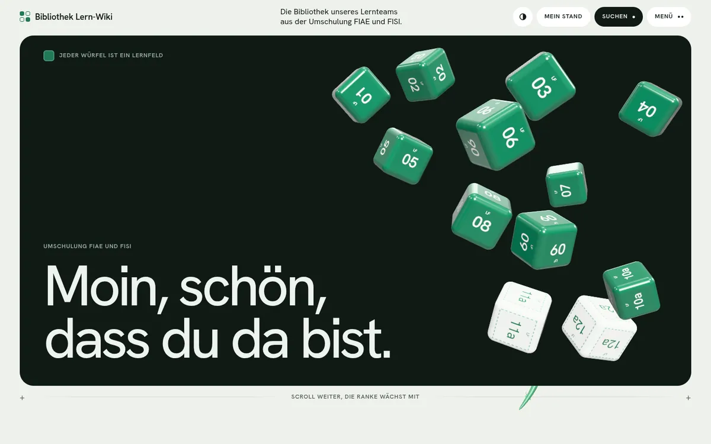
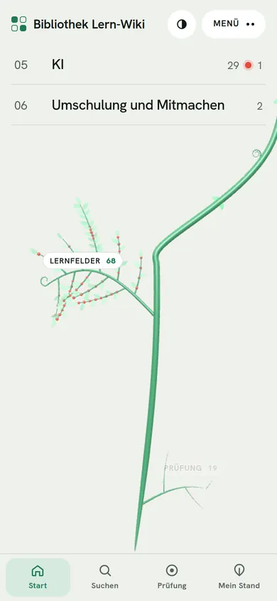

Protokoll · begonnen 10/2026läuft live
Wiki-APP
Das Lern-Wiki unseres Umschulungsteams als App für Handy und Desktop, auch ohne Netz.


- Frage
- Unser Lernteam schreibt sein Wiki in Markdown auf GitHub. Wie wird daraus etwas, das man in der Bahn auf dem Handy liest, auch im Funkloch?
- Aufbau
- Eine installierbare Web-App ohne Framework. Ein Service Worker speichert die App und jeden gelesenen Artikel für offline. Die Artikel kommen direkt aus dem Wiki-Repository, werden mit marked umgewandelt, mit DOMPurify bereinigt und Formeln mit KaTeX gesetzt. Auf der Startseite stehen zwölf Lernfeld-Würfel, und eine 3D-Ranke (three.js) wächst beim Scrollen mit: Jedes Blatt ist ein Artikel.
- Ergebnis
- 172 Artikel, 75 davon mit Prüfungs-Ampel. Lernstand pro Artikel, ein Prüfungsmodus „ROT zuerst“, ein Leseausweis mit 17 Stempeln und Fehlermeldungen direkt als GitHub-Issue. Ein GitHub-Actions-Workflow holt jede Nacht neue Artikel, baut die App, testet sie im echten Browser (Installierbarkeit, Start im Flugmodus, Fehler in der Konsole) und veröffentlicht sie. Die Versionsnummer zählt sich dabei selbst hoch.
- Meine Rolle
- Idee, Konzept und Umsetzung der App. Die Artikel schreibt das Lernteam.
- Erkenntnis
- Ein Test war bei mir grün und auf GitHub rot, weil er eine feste Zeit wartete und der Server dort langsamer ist. Seitdem warten meine Tests auf Zustände statt auf die Uhr, und vor jedem Push läuft der Test zusätzlich gedrosselt auf zwei Kernen.
- JavaScript
- PWA
- Service Worker
- three.js
- GitHub Actions
- Puppeteer